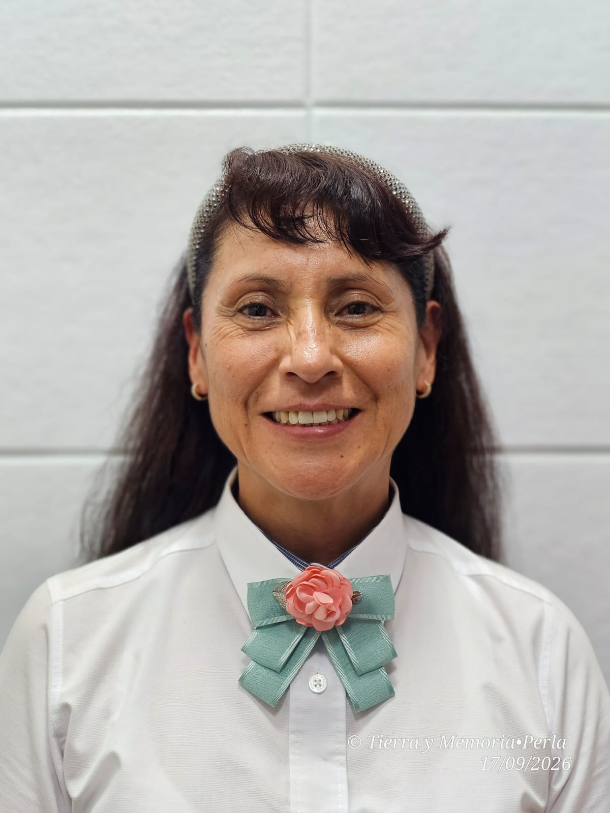

Hacia un Centro Universitario UAEMéx Texcoco cercano, incluyente, progresista y comprometido con su región. Tres sectores, una comunidad universitaria; seis pilares, una visión de transformación.
El Centro Universitario UAEMéx Texcoco es una comunidad construida a lo largo de tres décadas por estudiantes, personal académico y administrativo. El periodo 2026–2030 representa una oportunidad para reconocer esa trayectoria y construir una nueva etapa de desarrollo institucional con una gestión cercana, basada en evidencia, con diálogo, planeación, seguimiento y rendición de cuentas.
El CUTEX cuenta con fortalezas importantes pero también con áreas de atención identificadas a partir de la estadística institucional y los procesos recientes:
Trayectorias completas, calidad educativa, permanencia, tutoría efectiva, becas, biblioteca híbrida e inclusión desde el ingreso hasta la titulación.
Conocimiento pertinente, fortalecimiento de cuerpos académicos, proyectos colaborativos, divulgación científica e incorporación temprana del estudiantado.
Comunidad activa y saludable mediante la reactivación de talleres culturales, espacios deportivos dignos y fomento a la identidad universitaria.
Desarrollo, reconocimiento, clima organizacional, satisfacción laboral y formación continua para el personal académico y administrativo.
Infraestructura segura, servicios transparentes, sistema de seguimiento de compromisos, sostenibilidad ambiental y simplificación administrativa.
Vinculación regional efectiva, servicio social con sentido formativo, impulso al emprendimiento y compromiso con el desarrollo del oriente del Estado de México.
Trayectoria Académica: Profesora de tiempo completo en el Centro Universitario UAEM Texcoco desde 2006 (profesora de asignatura de 2002 a 2006).